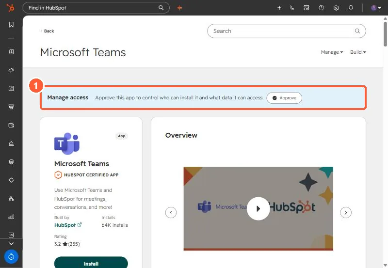
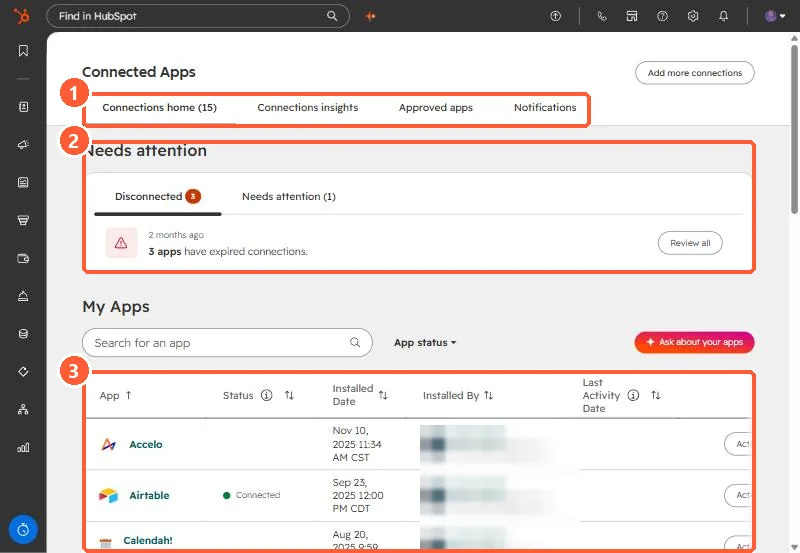

Short answer
The Microsoft Teams app installs at admin level (a Microsoft admin consents for the tenant) or user level (no admin needed, but limited to notifications, creating tasks and tickets, and Teams meeting links). Either way, each person's HubSpot user has to be mapped to their Teams user: automatic when the emails match, otherwise they connect it in My settings and click Verify on HubSpot's message in Teams. Admin consent lets the app into the tenant; it does not connect each user. The SharePoint and OneDrive app attaches files to records, but a Super Admin has to add its card to record layouts first.
1. Install Microsoft Teams
Install from the HubSpot Marketplace listing. The Manage access banner on the listing (1) is HubSpot's own app approval, separate from Microsoft's consent.


| Install | Who | What you get |
|---|---|---|
| Admin level | A Microsoft admin consents for the organization | The full integration |
| User level | Any user, no Microsoft admin needed | HubSpot notifications in Teams, creating tasks and tickets from Teams, and Teams links on your meetings |
You sign in with your Microsoft account. A user-level install goes straight to the Teams connected app settings.
2. Map each user
HubSpot needs your HubSpot user mapped to your Teams user to add Teams meeting links, send you notifications, and create custom notifications. Mapping is automatic when the email address matches in both apps. When it does not:
- Open Connected Apps, click Microsoft Teams, then the Settings tab and My settings.
- Click Connect account, enter your Teams email, and click Update linked account.
- In Teams, click Verify on the message from HubSpot. A welcome message confirms it.
Super Admins can review all mapped users on the General Settings tab. Because mapping happens per person, track who has connected rather than guessing from errors. See auditing user connections.
3. What the Teams integration does
- Meeting links: add a Teams link when scheduling a meeting from a record or in the meetings tool. Links are created in the account's default language. See meeting links.
- Notifications: HubSpot notifications in Teams, plus custom notifications.
- Tasks and tickets created from Teams.
- Webinars: Teams webinar sync, set per user (My settings) and for the team (Global Settings) under Settings, Webinars.
- Calls: for click-to-call and call logging, see calling setup.
4. When it works for some users and not others
- Check the user is mapped (General Settings, or their My settings).
- Check their Microsoft account can use the app. Organizations often assign enterprise apps to Entra ID groups; a user outside the group cannot use it even after admin consent.
- Have the user accept any permission prompts on their own account.
- Remember Entra groups control who gets the app, not HubSpot permissions. HubSpot roles and permissions are still set in HubSpot, see users and permissions.
5. SharePoint and OneDrive files
The Microsoft SharePoint and OneDrive app attaches and organizes files on records and in workflows. It shows under Connected Apps (3):


- A Super Admin, or a user with the Customize record page layout permission, must add the card to record layouts before anyone sees it.
- Users need access to the files they link in Microsoft.
- Workflow actions can create and organize files.
- You can connect SharePoint or OneDrive first and add the other later.
6. What is changing for 2027
- User-level installs. People can connect Teams for themselves without a Microsoft admin, for notifications, tasks and tickets, and meeting links. Everything else needs the admin-level install.
- Microsoft-side access decides a lot. Admin consent, Entra group assignment and per-user prompts all have to line up, and they are fixed in Microsoft, not HubSpot. The same applies to Outlook, see HubSpot with Outlook.
Common questions
We approved the app but a user still cannot add Teams links.
Admin consent does not map users. Check the user's mapping in My settings and their access to the app in Microsoft.
Do I need a Microsoft admin?
Not for a user-level install, which covers notifications, tasks and tickets, and meeting links. Yes for the full admin-level install.
Can Entra groups give users HubSpot permissions?
No. They decide who can use the app in Microsoft. HubSpot permissions are managed in HubSpot.
Why do I not see SharePoint files on records?
The card has to be added to the record layout by a Super Admin or a user with the layout permission.